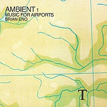
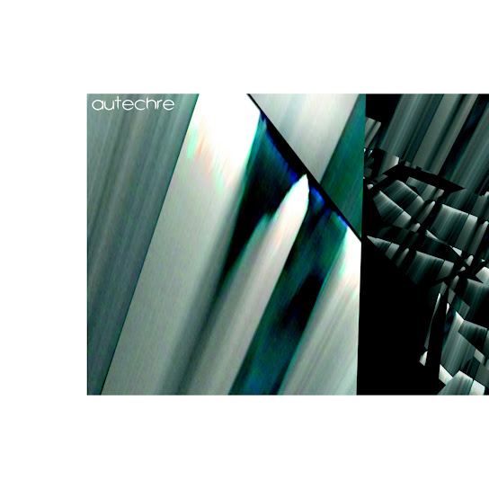

Generative Music is term coined by Brian Eno to describe music that is created by a system that is ever-different and ever-changing. The ideas behind Generative Music first appeared in the mid 60's with the work of minimalist artists like Steve Reich, John Cage and Philip Glass. Modern Generative music creaters use synthesizers, humans, tape loops, computers, coding, and a variety of creative techniques to create music.
| Song | Album | Artist | Year of Release | Album Image |
|---|---|---|---|---|
| 2/1 | Ambient 1: Music for Airports | Brian Eno | 1978 |  |
| It's Gonna Rain, Pt. I | Early Works | Steve Reich | 1965 | |
| Cold Moon | Selected Public Works, Vol. 3 | Lightbath | 2019 | |
| Tektra | Tektra | Roland Kayne | 1984 | |
| Cfern | Confield | Autechre | 2001 |  |
The recording below is an improvisation performed by Chris Harnett and Tiber Reardon called "Enter Sandman" It uses Generative music created by a synthesizer combined with live performance.